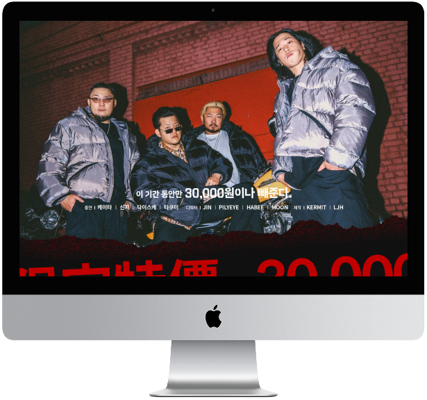

Puffer JacketEarly-Bird
패딩 얼리버드 퍼블리싱 프로젝트
기여도 : 2인 팀 프로젝트 (퍼블리싱 95%)
제작 기간 : 3일 (퍼블리싱 3일)
툴 : Figma, Photoshop, Visual Studio Code



Project Vision
파트장님과 협업한 프로젝트인 만큼, 기획된 디자인의 의도를 최대한 살릴 수 있는 방향을 고민하며 작업했습니다. 스크롤에 반응하는 다양한 이벤트를 적용하되, 전체적인 흐름은 유지하여 화려하면서도 일관된 구성을 만들고자 했습니다. 이를 통해 사용자가 콘텐츠를 더욱 직관적으로 이해할 수 있도록 설계했습니다.
- 01 스크롤에 반응하는 다양한 인터랙션 효과로 역동적인 경험 제공
- 02 불필요한 스크롤을 줄이고 가독성을 높인 효율적인 레이아웃 구성
- 03 화려한 이미지와 컨셉을 강조하여 강렬한 비주얼 완성
Design System
Typography
Color
-
#08090B
-
#444545
-
#DADADA
-
#FFFFFF
노스페이스의 세련되고 트렌디한 이미지를 강조하기 위해 컬러는 최소화하고, 임팩트있는 영문 폰트로 포인트를 주었으며, 기본 폰트는 pretendard를 이용해 가독성을 높였습니다.
Publishing
부드러운 스크롤
스크롤 애니메이션
커서 트래킹
스와이퍼 활용
Lenis 스크롤 라이브러리를 활용하여 스크롤이 부드럽고 자연스럽게 이동하도록 하였습니다. 이를 통해 사용자에게 더욱 쾌적한 웹 탐색 경험을 제공하고자 하였습니다.
스크롤에 따라 자연스럽게 애니메이션 효과를 적용하여 사용자에게 보더 동적인 경험을 제공하며, 스크롤 이벤트 처리 최적화를 통해 성능 저하 없이 부드러운 전환 효과를 구현했습니다.
커서의 위치에 반응변경하는 효과를 추가하였습니다. 어두운 무채색 계열의 컬러를 사용하여, 이 효과가 더욱 돋보일 것이라고 판단하여 사용자의 흥미를 자극하고자 하였습니다.